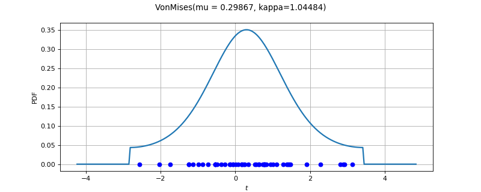

VonMisesFactory¶
(Source code, png)
{kind=link}

- class VonMisesFactory(*args)¶
VonMises factory.
- Parameters:
- circularbool, optional
Flag to tell if the data are in
 (circular=False) or in
(circular=False) or in  (circular=True). Default is True.
(circular=True). Default is True.
See also
Notes
If circular=True, we introduce
 . Then, the estimators read:
. Then, the estimators read:![\begin{eqnarray*}
\displaystyle\Hat{\mu}_n^{\strut} &=& \mathrm{Arg}(z_n)\\
\displaystyle\Hat{\kappa}_n&\mbox{s.t.}&\frac{I_1(\Hat{\kappa}_n)}{I_0(\Hat{\kappa}_n)}=\sqrt{\frac{n}{n-1}\left(|z_n|^2-\frac{1}{n}\right)}
\end{eqnarray*}]()
where
 and
and  are the modified Bessel functions of the first kind of order 0 and 1.
are the modified Bessel functions of the first kind of order 0 and 1.If circular=False, the estimators read:
![\begin{eqnarray*}
\displaystyle\Hat{\mu}_n^{\strut}&=&\frac{1}{n}\sum_{k=1}^n X_k\\
\displaystyle\Hat{\kappa}_n&\mbox{s.t.}&\frac{I_1(\Hat{\kappa}_n)}{I_0(\Hat{\kappa}_n)}=\frac{1}{n}\sum_{k=1}^n\cos(X_k-\Hat{\mu}_n)
\end{eqnarray*}]()
Note that the last equation has no solution if the right-hand side is not positive.
In both cases, the resolution of this equation defininig
 can be tuned through
VonMisesFactory-RelativePrecision, VonMisesFactory-ResidualPrecision,
VonMisesFactory-MaximumIteration in
can be tuned through
VonMisesFactory-RelativePrecision, VonMisesFactory-ResidualPrecision,
VonMisesFactory-MaximumIteration in ResourceMapMethods
build(*args)Build the distribution.
buildAsVonMises(*args)Build the VonMises distribution.
buildEstimator(*args)Build the distribution and the parameter distribution.
Accessor to the bootstrap size.
Accessor to the object's name.
getId()Accessor to the object's id.
getName()Accessor to the object's name.
Accessor to the object's shadowed id.
Accessor to the object's visibility state.
hasName()Test if the object is named.
Test if the object has a distinguishable name.
setBootstrapSize(bootstrapSize)Accessor to the bootstrap size.
setName(name)Accessor to the object's name.
setShadowedId(id)Accessor to the object's shadowed id.
setVisibility(visible)Accessor to the object's visibility state.
- __init__(*args)¶
- build(*args)¶
Build the distribution.
Available usages:
build(sample)
build(param)
- Parameters:
- sample2-d sequence of float
Sample from which the distribution parameters are estimated.
- paramCollection of
PointWithDescription A vector of parameters of the distribution.
- Returns:
- dist
Distribution The built distribution.
- dist
- buildAsVonMises(*args)¶
Build the VonMises distribution.
Available usages:
buildAsVonMises(sample)
buildAsVonMises(param)
- Parameters:
- sample2-d sequence of float
Sample from which the distribution parameters are estimated.
- paramCollection of
PointWithDescription A vector of parameters of the distribution.
- Returns:
- dist
VonMises The built distribution.
- dist
- buildEstimator(*args)¶
Build the distribution and the parameter distribution.
- Parameters:
- sample2-d sequence of float
Sample from which the distribution parameters are estimated.
- parameters
DistributionParameters Optional, the parametrization.
- Returns:
- resDist
DistributionFactoryResult The results.
- resDist
Notes
According to the way the native parameters of the distribution are estimated, the parameters distribution differs:
Moments method: the asymptotic parameters distribution is normal and estimated by Bootstrap on the initial data;
Maximum likelihood method with a regular model: the asymptotic parameters distribution is normal and its covariance matrix is the inverse Fisher information matrix;
Other methods: the asymptotic parameters distribution is estimated by Bootstrap on the initial data and kernel fitting (see
KernelSmoothing).
If another set of parameters is specified, the native parameters distribution is first estimated and the new distribution is determined from it:
if the native parameters distribution is normal and the transformation regular at the estimated parameters values: the asymptotic parameters distribution is normal and its covariance matrix determined from the inverse Fisher information matrix of the native parameters and the transformation;
in the other cases, the asymptotic parameters distribution is estimated by Bootstrap on the initial data and kernel fitting.
- getBootstrapSize()¶
Accessor to the bootstrap size.
- Returns:
- sizeinteger
Size of the bootstrap.
- getClassName()¶
Accessor to the object’s name.
- Returns:
- class_namestr
The object class name (object.__class__.__name__).
- getId()¶
Accessor to the object’s id.
- Returns:
- idint
Internal unique identifier.
- getName()¶
Accessor to the object’s name.
- Returns:
- namestr
The name of the object.
- getShadowedId()¶
Accessor to the object’s shadowed id.
- Returns:
- idint
Internal unique identifier.
- getVisibility()¶
Accessor to the object’s visibility state.
- Returns:
- visiblebool
Visibility flag.
- hasName()¶
Test if the object is named.
- Returns:
- hasNamebool
True if the name is not empty.
- hasVisibleName()¶
Test if the object has a distinguishable name.
- Returns:
- hasVisibleNamebool
True if the name is not empty and not the default one.
- setBootstrapSize(bootstrapSize)¶
Accessor to the bootstrap size.
- Parameters:
- sizeinteger
Size of the bootstrap.
- setName(name)¶
Accessor to the object’s name.
- Parameters:
- namestr
The name of the object.
- setShadowedId(id)¶
Accessor to the object’s shadowed id.
- Parameters:
- idint
Internal unique identifier.
- setVisibility(visible)¶
Accessor to the object’s visibility state.
- Parameters:
- visiblebool
Visibility flag.